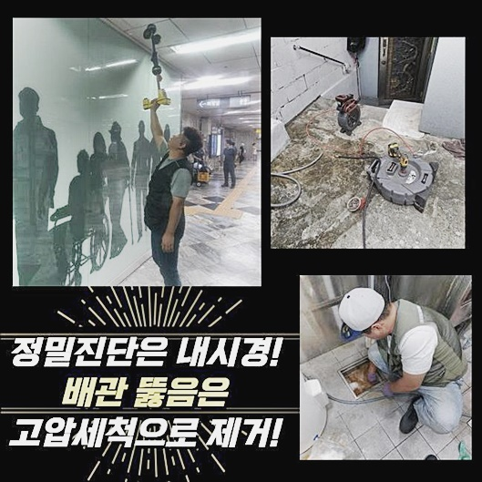
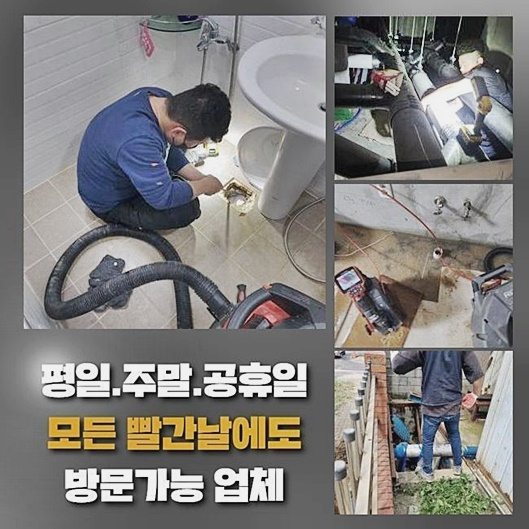
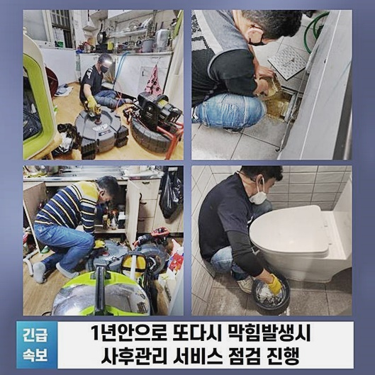
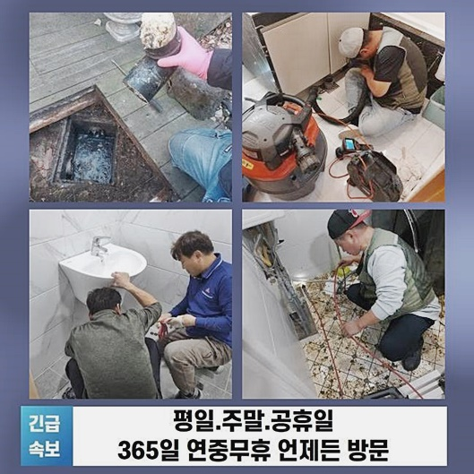
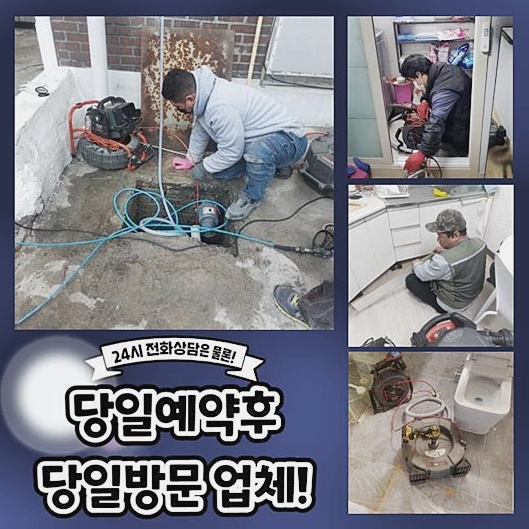
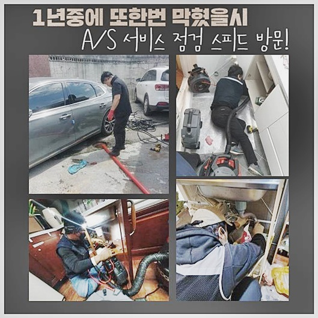
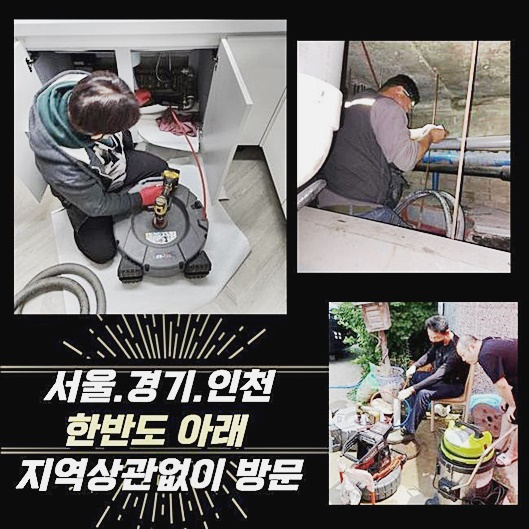

🏠 성동구 홍익동하수구막힘 성수동 출장설비
용인시 처인구 배관막힘 전문 시공 후기

📋 작업 개요
- 위치: 용인시 처인구, 수원시 영통구, 화성시 동탄
- 서비스 유형: 배관막힘, 고압세척, 내시경점검
- 작업 일시:
- 업체명: 하수구수사대 (010-5615-2118)
🔍 문제 상황
성동구 홍익동하수구막힘 성수동 출장설비
배수구가 갑작스레 막힌다면 손님들은 어떤 계획으로 말썽을 극복하고 있으신가요
많은 분께서 자신의 노하우를 통하여 개통해보려는 작업을 하게 됩니다
집 안에 있는 다양한 세척용품을 써보시거나 압축기기를 넣어보기도 하죠
해당 방안이 아예 효과가 없다고는 말씀드리기 힘들지만 오히려 말썽을 고착화시킬 수도 있으므로 무모한 감행은 자제하시는 게 바른 결정입니다
악화가 심해진다면 파이프를 들어내버려야 되는 사태에 치달을 수도 있어요
금일엔 실제현장을 기초로 하여 배관고장에 관하여 말씀드리려고 하니 끝까지 읽어주시면 큰 조력이 될 것이라 확신합니다
욕실배관에선 이용한 수돗물이 진입하며 잔재들이 쉬이 적층을 이룰 수 있어요
원형의 구멍에 이런 이물 누증이 심화하게 되면 막힘증세는 말할 것도 없고 실체적인 기능성도 심히 변화할 수 있어서 주의가 요망돼요
배관막힘으로 자주 맞닥뜨릴 수 있는 것은 배관물의 역행이나 악취 등을 들 수 있습니다
문제가 발발하기 이전에 정기적으로 진단하고 생활해 나가야 갑작스레 사용하지 못하는 상황을 방예할 수가 있답니다
다소 안일한 생각으로 관리한 탓에 허둥지둥 저희팀을 찾은 분들이 굉장히 많아요

🔎 원인 분석
💡 전문가 진단: 정밀 진단 장비를 사용하여 슬러지의 고착 여부를 판명하고 타격/세척 작업을 실시했습니다.
이번 글에서 말씀해드릴 지점도 관막힘과 관련한 사항으로 조속한 방문을 요청하셨는데요
가정 내의 화장실 배관이 정체가 되었고 여러 처소에서 물넘침이 나타나는 경우라 신속하게 출발해서 사태를 잠재우기로 마음 먹었답니다
도착한 장소는 주상복합이었고 1층에는 상가가 있었답니다
상가의 상부를 올려보니 배수관의 일부분이 현출되어 마감된 모습이었답니다
여러지점에서 파이프 문제가 다양한 형태로 나타나고 있다는 걸 알고나서 외부의 하수시설부터 손을 대보기로 결정하였어요
겉부분부터 세대 내부의 배수관 편으로 배수관 세정작업을 시행하였는데요
그것은 배수관 시스템은 가정 내에서 발생한 오수가 외부의 파이프까지 접합된 특징을 지녀 한 쪽이 차단되면 다른곳에서 고장이 일어날 수 있기 때문입니다
그렇기에 대략적인 수리가 불가결한 것이었답니다
의뢰자댁에서 사시는 거주자께서는 욕실 내에서 샤워나 세안을 하게되면 싱크대쪽 및 욕실의 다른 부분에서 탁수가 위로 올라오게 되는 모습이 목격되는 사태였는데요
배수관의 특정 부위에 고장이 나서 그쪽과 관계가 있는 배수파이프에서도 차단이 생긴 걸로 예측할 수가 있었습니다
이렇게 배관막힘이 생겼을 시는 간단히 일어난 곳만 뚫어내는 게 아닌 총체적인 파이프 클리닝이 불가피합니다
일부분의 슬러지만 없애버린다면 타 처소에서 막힘 현상이 재차 출현할 가망성이 높아 관 내에 체류한 잔재 일체를 빈틈없이 소제하려는 결정이 불가결한 것입니다
배관이 이물에 의해 더렵혀지면 수도가 지나갈 공간이 좁아지게 되며 오수가 빠지는 속도가 느려지게 되고 심한 경우엔 역류까지 다다를 수 있는겁니다

🔧 작업 과정
이번에 방문한 곳은 문제가 생긴데가 천장노출된 배관이었습니다
그때문에 상가 천장 부근에서부터 수리를 이행하기로 마음먹었고 간혹 발발할 수 있는 오수누출 등의 사태에 예비하여 보양을 진행하였답니다
배관에 홀을 내어 내부 세정을 감행해 나가는 것인데요
노출된 하수관에서 매립부근으로 통수작업을 속행하고 이어서 안쪽에서 밖으로 재차 세척하기로 결단내렸어요
이와 같이 양쪽 방향에서 소제를 감행하면 훨씬 안정적이고 실용적인 이물제거가 이행됩니다
실제 막힘 곳의 모습을 토대로 시공하는 계획을 다채롭게 구성할 수 있습니다
전체 배수시스템의 성격을 알아내고 세부적 사안을 보고 시공하는 거라서 신뢰할 수 있게끔 완성도있게 배관이 막힌 걸 이행할 수 있어요
하층의 천장쪽에 노현된 배관에서 타공을 끝낸 지점을 기점으로 해서 내방쪽에서는 고급 플렉스샤프트 도구를 가져와 업무를 진행하였답니다
이 기계는 파이프 세척에 빠지면 안 되는 물건으로 쇠사슬 모양으로 제작된 부위가 파이프 내측을 골고루 돌리면서 이물질들을 사라지게 만들죠
흐름이 멈춘 지점을 해결한 뒤 세부적인 청소를 실시하려고 내시경cctv를 통해 내부의 모습을 관측하면서 배관 소제를 실시하였어요
오로지 뚫음에만 신경쓰는 것이 아니고 바깥의 배수관까지 연결된 곳이 완벽하게 해결되는 걸 목적으로 해서 양방향에서 세척을 계속해서 진행하여야 했답니다
전체적인 배수관의 규모가 컸기 때문에 한쪽에서만 시공하는 것보단 양방향에서 동시에 진행하면 더 좋습니다
이렇게 작업을 이행했더니 어느덧 말끔해진 배수구 안을 목격할 수가 있었습니다
문제의 화장실로 위치를 옮겨 물이 잘 내려가는지 확인했죠
이상없이 관이 뚫리고 벽면까지 깔끔해졌다면 이전과 같이 주방배관쪽으로 역류증상이 안 나타나고 밖으로 고스란히 흘러나가게 되는 것인데요
개수대를 포함한 화장실 배수구에서 이상여부를 판독하였는데 이전과 같은 상황은 전혀 발생하지 않았고 속시원하게 사용한 물이 소멸되었기에 통수관련한 수보를 너끈히 종결하게 되었답니다
역류 및 배관막힘 시공을 제대로 하려면 전반적인 설비 이해도가 있는 상태에서 시행하는 게 중요합니다
가끔 성한 자리까지 고장내버릴 수 있으므로 경험과 실력이 충분한 기술자가 필요한 것입니다
파이프쪽에 장애가 발생하게 되면 다양한 비용 등이 생길 수 있어서 큰 일이 터지기 전 정기적으로 보수하여 배관을 장기적으로 이용할 것을 추천합니다
관벽에 이물이 누적되지 않게만 관리가 실행된다면 역류증세나 거북한 사태를 마주하지 않고 청결하게 생활하실 수 있어요


✅ 작업 완료
배관내시경을 이용한 관측에서부터 개문을 하는 업무까지 연관된 문제들과 관련해선 항상 우리가 함께해 드리겠습니다
믿을 수 있는 곳을 물색중이시라면 언제든지 출동할 수 있는 우리들에게 전화를 걸어 주십시오
고객님이 요청한 시간 안에 현장 답사를 이행하고 있으며 별도 방문비용을 요청드리지 않으므로 수월하게 무료진단 서비스를 밟아나가실 수 있죠
또 진솔한 태도를 토대로 의뢰인분의 염려를 우선적으로 없애드리고 있으니 큰 걱정 안하셔도 됩니다
본 글에서 설명해 드렸던 부분 말고도 의문점이 있으시다면 주저치 말고 연락을 취해주시길 바랍니다




⚠️ 하수구 배관 막힘 예방 및 관리 가이드
- ✅ 머리카락, 비닐, 물티슈 등 물에 분해되지 않는 이물질은 절대 흘려보내지 마세요.
- ✅ 기름기 많은 식기는 설거지 전 키친타올로 먼저 기름때를 닦아내세요.
- ✅ 주기적으로 배수구에 뜨거운 물을 가득 부어주어 유지방 고착을 방지하세요.
- ✅ 작업 후 1년 이내 재발 시 무상 A/S 보증 서비스를 제공합니다.
💡 핵심 정리
- 확실한 장비 작업(내시경 점검 및 샤프트 스케일링)으로 원인을 뿌리 뽑습니다.
- 작업 후 1년 이내에 동일한 부위 재발 시 100% 무상 A/S 서비스를 보장합니다.
- 서울 · 경기 · 인천 전 지역에 24시간 언제든 긴급 출동할 수 있도록 항시 대기 중입니다.
❓ 자주 묻는 질문 (FAQ)
🚨 용인시 처인구 배관막힘 문제로 고민이신가요?
정확한 원인 진단과 확실한 시공으로 재발 없는 해결을 약속드립니다.
24시간 긴급 출동 | 서울 · 경기 · 인천 전지역 | 1년 내 재발 시 무상 A/S